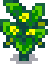
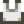
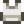

Calabaza amarilla
| Calabaza amarilla | |||||||||||||||||||||||
| Un tipo de calabaza amarilla y curvada, que se cosecha cuando no está madura y sigue blanda. | |||||||||||||||||||||||
| Información | |||||||||||||||||||||||
| Semilla | |||||||||||||||||||||||
| Tiempo de crecimiento | 6 días | ||||||||||||||||||||||
| Estación | |||||||||||||||||||||||
| Energía / Salud |
|
||||||||||||||||||||||
|
|||||||||||||||||||||||
|
|||||||||||||||||||||||
La Calabaza amarilla es un cultivo que crece a partir de Semillas de calabaza amarilla después de 6 días y continúa produciendo cada 3 días.
Fases
Cuando se cosecha cada planta da 1 Calabaza amarilla.
| Fase 1 | Fase 2 | Fase 3 | Fase 4 | Fase 5 | Cosecha | Post-cosecha |
|---|---|---|---|---|---|---|
 | ||||||
| 1 Día | 1 Día | 1 Día | 1 Día | 2 Días | Total: 6 Días | Sigue produciendo cada 3 días. |
Calendario de Crecimiento de Cultivos
| Base | ||||||
|---|---|---|---|---|---|---|
| Lu | Ma | Mi | Ju | Vi | Sá | Do |
Regalos
| Reacciones de Aldeanos
| |
|---|---|
| Le gusta | |
| No le gusta | |
Lotes
La calabaza amarilla puede ser una de las opciones elegidas para el  Lote Cultivos de Verano mezclado en la Alacena.
Lote Cultivos de Verano mezclado en la Alacena.
Recetas
La calabaza amarilla no se usa en ninguna receta.
Sastrería
La calabaza amarilla puede usarse en el carrete de la Máquina de coser con Tela en el alimentador para crear la Camisa sin mangas teñible.
- Versión Masculina: 
- Versión Femenina: 
Puede usarse en Tintura sirviendo como tinte amarillo en los Tarros de tinta en la Casa de Emily y Haley. También se puede utilizar como tinte marrón cuando se usan en la carrete de la Máquina de coser con una prenda teñible en el alimentador.
Misiones
La calabaza amarilla no se usa en ninguna Misión.
Historial
- 1.6: Introducido.
| Cultivos | |
|---|---|
| Primavera | Ajo • Allium azul • Arroz sin moler • Chirivía • Col rizada • Coliflor • Fresa • Grano de café • Judía verde • Patata • Ruibarbo • Tulipán • Zanahoria |
| Verano | Amapola • Arándano • Carambola • Calabaza amarilla • Chile • Girasol • Grano de café • Lentejuela de verano • Lombarda • Lúpulo • Maíz • Melón • Rábano • Tomate • Trigo |
| Otoño | Alcachofa • Amaranto • Berenjena • Brócoli • Calabaza • Col china • Girasol • Grosella • Maíz • Ñame • Remolacha • Rosa hada • Trigo • Uva |
| Invierno | Melón de polvo |
| Especial | Baya de gema dulce • Fruta milenaria • Fruto Qi • Higo chumbo • Hojas de té • Piña (fruta) • Raíz de taro |